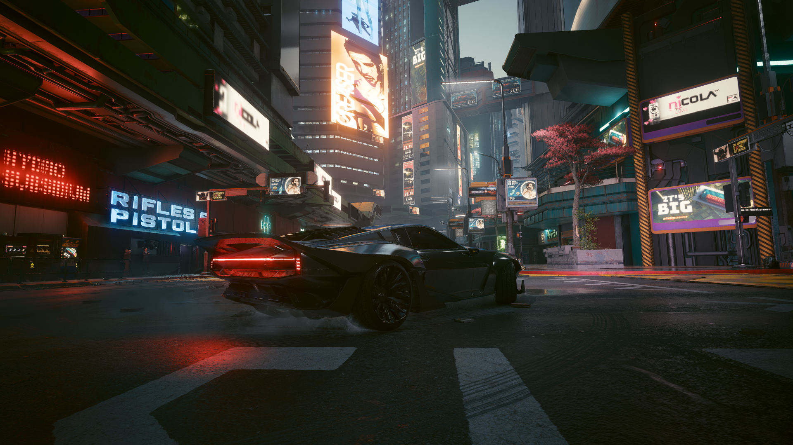
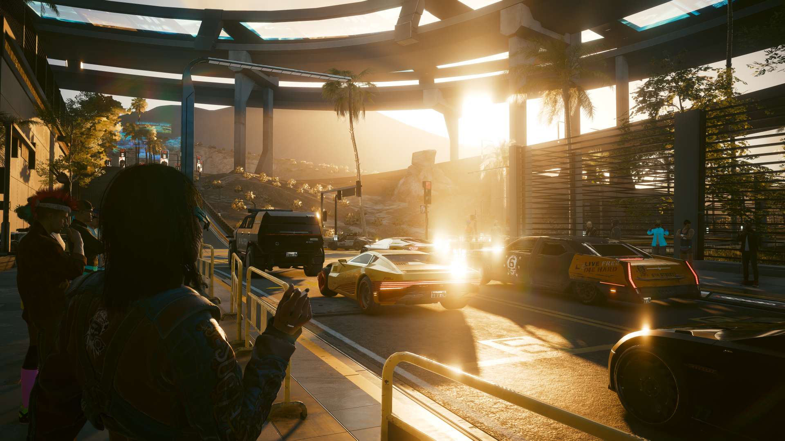

This is my first post! As an Information Science major, I’ve had the chance to learn about a field that combines technology, data, and people. From my experience, Information Science is about understanding how information, both online and offline, is collected, organized, and used for various purposes, like making business decisions or even managing something as simple as a social media account. It’s a diverse field that combines data and technology, making it super important in today’s world, which is driven by big data.
It’s surprising that at first, because I was actually a Criminal Justice major, but I ended up making the switch because I realized I was more interested in the tech field. Information Science has really been interesting for me, and I’ve learned so much about how data impacts the world. I love that I have the potential to still apply what I know about Criminal Justice to this field.
My hopes for my career are that eventually I can either study Cybersecurity (my real passion lies in Cybersecurity) or AI, and land a job that combines all three of my interests: Information Science, Criminal Justice, and Cybersecurity. I think the combination of these fields will give me a unique edge.
My Favorite Game- Cyberpunk 2077
by Mrrudhula Perumal


This is my second post! This time it’s about one of my all time favorite games: Cyberpunk 2077. As someone who loves futuristic worlds and technology, this game was a perfect fit for me. It's set in a dystopian future, and it blends together all the things I enjoy, open world exploration games, a high tech theme, and an amazing storyline filled with deep, thought provoking themes.
I first experienced Cyberpunk 2077 by watching a playthrough on YouTube when it launched, because my PC couldn’t handle it at the time. I have upgraded most of my components since then. Even though the game had its share of issues at launch, such as bugs and performance problems, I was hooked from just watching. Night City was just so captivating and looked so immersive, and the story seemed like exactly the kind of thing I’d love. I couldn’t wait to actually play it myself.
After upgrading my PC, I finally got to play the game firsthand, and it felt like I was seeing it for the first time, even though I technically wasn't. I was addicted to the level of detail put into the game, and I spent hours just exploring, checking out the sights and beautiful skyscrapers. The customization options, such as the cybernetic enhancements, really made the gameplay feel personal and unique.
Even though the launch wasn’t perfect, Cyberpunk 2077 gives you a lot of freedom in how they approach the game, the game lets you choose your style. And the story, touching on themes like transhumanism, corporate control, and AI, made it even more compelling, especially given my interest in tech and the future.
Overall, Cyberpunk 2077 is a game that has stuck with me despite its rocky start. It combines everything I love about gaming, an immersive world, a memorable narrative, and the thrill of exploring a future that feels just within reach. I’m glad I waited to experience it myself.